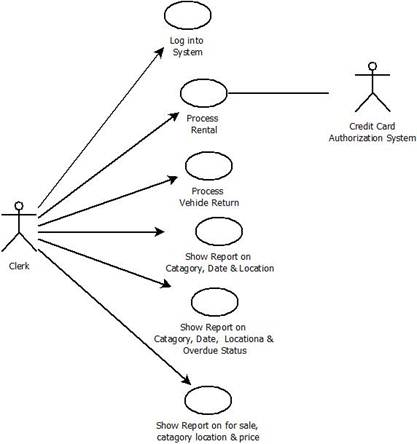
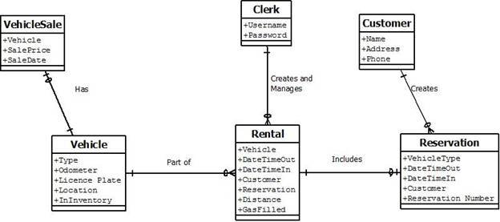
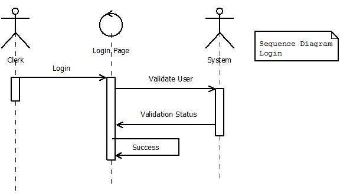
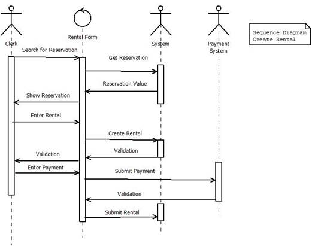
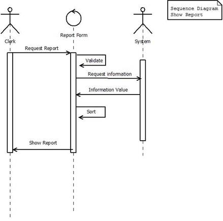
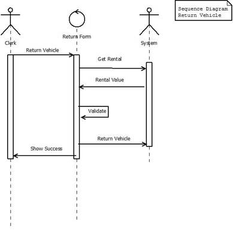
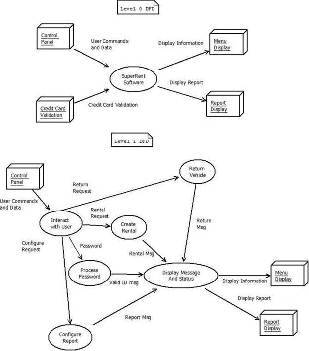
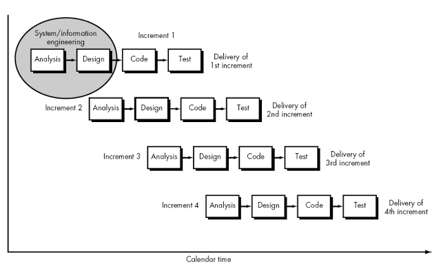
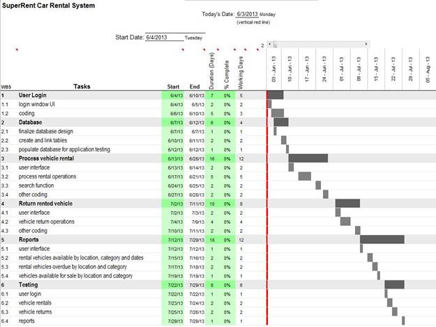

This document covers the analysis and design tasks of a software application to be developed for a car rental company. The purpose of this application is to manage information about vehicles available for rental, the various transactions for rentals, the company’s customers, and the users of the software application. The application will also allow SuperRent to manage the sale of older rental vehicles as used cars. This document is intended to be given to the software developers so that they can begin development on the software.
The particular scope of the application that this document focuses on is the tasks and functions that will be handled by clerks at various SuperRent locations. When a rental vehicle is returned by a customer, a clerk enters the date, time and the odometer reading. The clerk also makes a note of whether the gas tank is full. The software application calculates the charges by applying weekly rates to whole weeks, daily rate to remaining days and hourly rate to additional hours.
The application or the specific module for clerks should allow clerks to perform the following tasks:
-Show the vehicles of a specified category which are available for rental at a given location for a given set of time period (given as beginning and end dates)
-Show the vehicles rented from a given location and category which have not been returned past the scheduled return date.
-Show the vehicles at a given location and category that are for sales along with their sale prices
-If a category is not selected, vehicles in all available categories are displayed, grouped by category.
-If a SuperRent location is not selected, rental vehicles available at all locations are shown, grouped by location.
When a clerk starts the application, it will require login credentials before the clerk can use the application. After a clerk enters his / her correct username & password combination, the software will load the appropriate module for a clerk.
SuperRent is a vehicle rental company. The company began operations in 2003 with two locations. Through steady growth in the last ten years, SuperRent has locations in various cities across the country. Its headquarters are located in Burnaby, BC. SuperRent operates regional offices as well to better manage and run its vehicle rental locations.
Each location has an assortment of vehicles available for customers to rent. The available car types consist of the following: economy, compact, mid-size, standard, full-size, premium, luxury, SUV, and van. SuperRent also has trucks available in various sizes; 24 foot, 15 foot, 12 foot, box trucks, cargo vans. The vehicles available for rental have varying features and options to meet the needs of its customers. The different types of vehicles have different hourly, daily, and weekly rates, as well as different rates based on distance driven (charged for extra kilometers driven above the limit). The company offers varying insurance coverage options for hourly, daily, and weekly rentals for its fleet of cars and trucks.
SuperRent offers to its customers fairly new and well maintained vehicles for rental. Any vehicle that surpasses 80,000 kilometers on the odometer reading is taken out of the rental inventory. These used cars are made available for sale to allow the company to acquire capital and the space to purchase new vehicles for rental.
<<<<<<< HEAD
Since the user that we will be focusing on is the clerk, we will be creating user cases and stories for only the clerk. A typical clerk processes all the customer services, like renting a vehicle, returning a vehicle, etc.
Use Cases
1. Log into the system: Clerk is asked to enter username and password to login into the system. This will display menu selections to process rental, process vehicle return and show reports.
2. Processes renting a vehicle: Clerk will either enter a new rental or process a rental from an existing reservation. Information included will be type of vehicle and return date and time and insurance coverage.
3. Returning a vehicle: The clerk enters the date, time time and odometer reading and whether the gas tank is full. The Clerk then displays total cost and takes payment for the bill.
4. Clerk brings up reports;
I. Show the vehicles of a specified catgory that are available in a given location for a given set dates (usually given as form-date and to date)
II. Show the vehicles in a specified location and category that are overdue
III. Show the vehicles in a specified location and category that are for sale and their sale prices
|  |
Use Stories
Use case one can be split into two stories:
1. A Clerk logs into system with username and password so he can use the system.
Acceptance:
a. Incorrect information displays an error
b. Correct information will bring user to main menu.
2. A Clerk is displayed menu Items so he can enter the menu they would like to work from.
Acceptance:
a. Three Buttons are displayed: Process Rental, Process Return and Show Report
Use case two can be split into five stories.
1. From the main menu a clerk clicks on process rental and is brought to an page where he can process a rental
Acceptance:
a. Page will display rental input form, with a button labeled “Previous Reservation�.
b. Form will also include Location, type of vehicle and day and time to drop off and return the vehicle.
2. A Clerk clicks on Previous Reservation and it brings up a form so they can search via confirmation number or phone number.
Acceptance:
a. Form displays two input fields, confirmation number and phone number
3. On the search for reservation form, a clerk inputs the confirmation number or phone number and hits submit so he can find a previous reservation.
Acceptance:
a. If a reservation is found, it returns to reservation form with all fields pre-populated
b. If a reservation is not found, an error is displayed “No reservation found�
4. On the process rental form, a clerk fills out missing information from the rental input form and hits submit so he can take payment from the customer
Acceptance:
a. If there are no errors, payment form is displayed
b. If there are errors, there will be an error message describing what was wrong
5. On the payment form, a clerk is displayed a total. Clerk fills out payment information and hits submit
Acceptance:
a. If there are no errors, rental is submitted and payment is charged
b. If there are errors, there will be an error message describing what was wrong
Use case three can be split into two stories:
1. From the main menu, a clerk clicks on return a vehicle. This will bring up a form so the clerk may begin processing a return.
Acceptance:
a. Form will display a drop down box of license plates. Also included is a time and date field that is automatically filled out, an odometer field and a gas tank full check box
2. From the Return Vehicle display, as a clerk, he can return a vehicle into inventory.
Acceptance:
a. Form will display a drop down box of license plates.
b. Also included is a time and date field that is automatically filled out, an odometer field and a gas tank full check box
c. If there is an error, the system will display one
Use case four can be split into four stories:
1. From the main menu, a clerk clicks on reports; this will bring up a form so the clerk may begin processing a return.
Acceptance:
a. Form will display with a drop down for Category, Location, Dates,
b. Form will display check box for overdue, and for sale
2. From the reports display, as a clerk, can search for specified category that are available in a given location for a given set dates
Acceptance:
a. Brings up information all on one page if possible
b. Displays an error “no results found� if no results are found
3. From the reports display, as a clerk, can search for vehicles in a specified location and category that are overdue
Acceptance:
a. Brings up information all on one page if possible
b. Displays an error “no results found� if no results are found
4. From the reports display, as a clerk, can search for vehicles in a specified location and category that are for sale and their sale prices
Acceptance:
a. Brings up information all on one page if possible
b. Displays an error “no results found� if no results are found
Class Diagram

Sequence Diagram




Data Flow Diagram

This document focuses on a single module of the car rental system software being developed for SuperRent Car Rental Company and that module is the one that will be used by clerks. The incremental process model has been chosen for this module of the software application. The incremental process model works best for this situation where the module for clerks is being developed sort of separately from the rest of the car rental system. Initially, an early version of the clerks module will be delivered to the teams working on the remaining car rental system components to see how it works in the larger application. As development on the module progress through various stages, there will be tests to see how it functions and interacts with other modules in the car rental system. Some of these testing activities may result anywhere from minor to major modifications to the module. Through the development of the application, an increment of the clerks module will first be delivered to teams working on other components of the application to be integrated with the main application and then an increment of the application will be delivered to the clients for review.

The development of this software application is expected to take about two months. Here is a gantt chart that shows the timeline of the project.

>>>>>>> origin/Ting's-Branch---Design